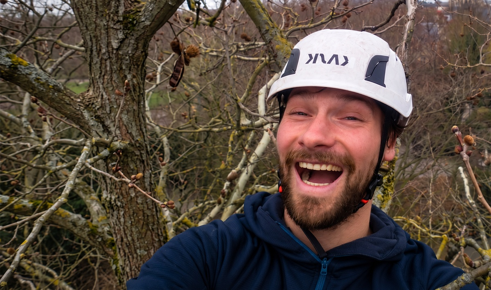
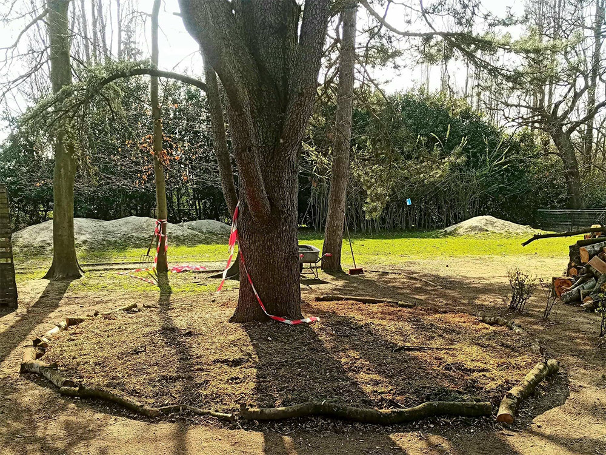

Lode Jans zorgt voor uw bomen in Oost- en West-Vlaanderen — met eerlijk advies, vakkundige uitvoering en een diepgewortelde visie op behoud en herstel.

Van snoeiwerken tot groeiplaatsverbeteringen, met de boom op de eerste plaats. Altijd in overleg met de klant.
Vakkundige snoeiwerken conform de ETW-normen. Lode snoeit gericht en naar de noden van uw boom — aan esthetiek hebben bomen zelf weinig. Laat een boom boom zijn.
De juiste boom op de juiste plek, met een duidelijk eindbeeld voor ogen.
Onafhankelijk expertise, waarbij het bomenbestand centraal staat.
Wanneer vellen écht de beste optie is — veilig en vakkundig. Soms blijft een dode stam bewust staan als waardevol biotoop (eco-velling).
Snelle interventie bij schade. Veiligheid eerst, behoud waar mogelijk.
Onnodige snoei, rigoureuze ingrepen of waardevol groen vellen — dat past niet bij de visie van Stamgast Boombeheer en heeft geen plaats binnen duurzaam boombeheer. Zo blijft je boom gezond, veilig en mooi.
Onze aanpak
Eenvoudig, eerlijk en altijd in overleg met u.
Online, per mail of telefoon — Lode reageert snel.
Inspectie & eerlijk advies op locatie.
Transparante prijs, geen verrassingen achteraf.
Lode doet het werk zelf, met zorg en aandacht.
Eerlijkheid en vakkennis worden het meest gewaardeerd.
"Lode heeft onze oude eik geïnspecteerd en besloten dat snoeien niet nodig was. Dat eerlijk advies, ook al kost hem dat werk, zegt alles over zijn aanpak."
"Vakkundig, snel en netjes. Na de stormschade was hij binnen de dag ter plaatse. De boom is gered en staat er nu beter bij dan ervoor."
"Eindelijk een boomverzorger die uitlegt wat hij doet en waarom. Geen overbodige snoei, gewoon goed advies en goed werk. Zeker aan te bevelen."
"Lode heeft onze oude beuk een tweede leven gegeven. Zijn kennis van oude bomen is indrukwekkend. Blij dat we voor het behoud van onze boom zijn gegaan."